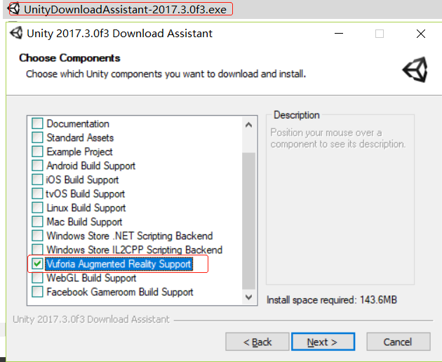
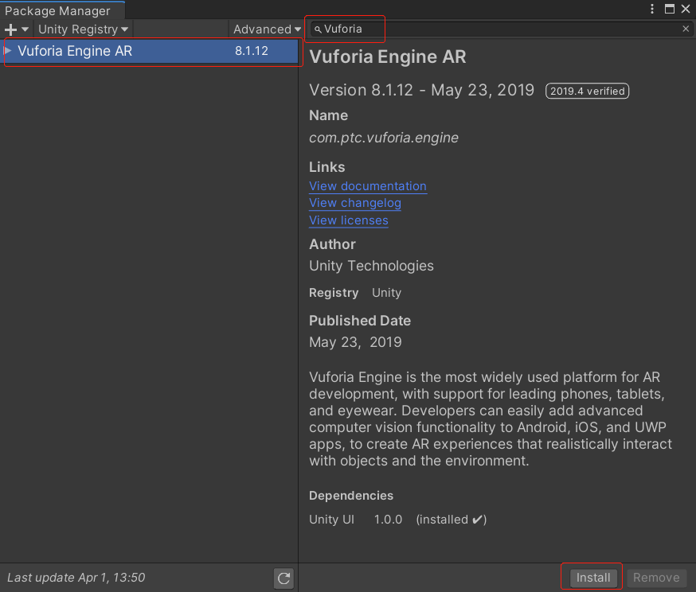
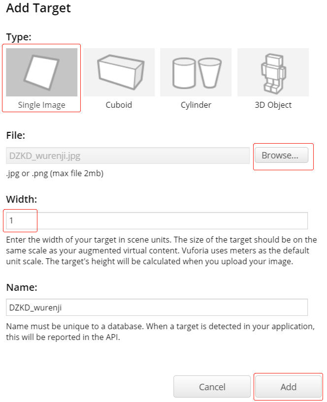
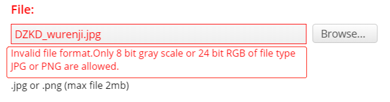
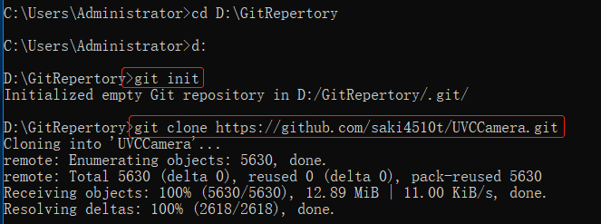
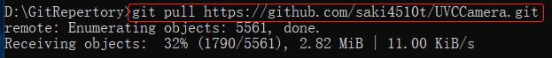
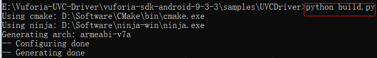
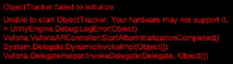
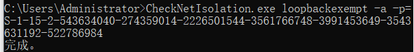

Vuforia Plugin 8.x.x概述
作者：追风剑情 发布于：2019-4-9 16:24 分类：Unity3d
高通开发的VR/AR
https://developer.vuforia.com/
Getting Started with Vuforia Engine in Unity
License Manager
[官方文档] Unity XR
SDK下载
https://developer.vuforia.com/downloads/sdk
https://docs.unity3d.com/Manual/vuforia-sdk-overview.html
使用教程参考
https://blog.csdn.net/SimulationPD/article/details/87272566
3D物体识别参考
https://blog.csdn.net/weixin_37608784/article/details/80434554
Vuforia开发文档
Vuforia Unity API文档
Vuforia Engine for Digital Eyewear(数字眼镜)
Vuforia开发文档 (影创眼镜 ActionOne)
|
Vuforia硬件与软件必要条件 Supported Versions |
||
| 设备OS | 开发OS | Unity版本 |
| Android 4.1+ | Windows 7+ | 2017.2+ |
| iOS 9+ | OSX 10.11+ | 2017.2+ |
| Windows 10 UWP | ||
利用下载助手安装高通的Vuforia
需要Unity 2017.3或更新的版本
官方教程: https://library.vuforia.com/articles/Training/getting-started-with-vuforia-in-unity.html

Unity 2019 在 Package Manager 中搜索 Vuforia 并安装

激活Vuforia Engine
PlayerSettings
Culling Mask必须要勾选上Default，否则无法显示摄像头画面
如果勾选了Delayed Initialization，则需要手动初始化和启动Vuforia
Max Simultaneous Tracked Images: 最大识别图数量
Max Simultaneous Tracked Objects: 最大识别对象数量
DeviceType
Handheld: 手持设备
Digital Eyewear: 数字眼镜
Phone + Viewer: 手机加显示器设备（MR开发）
查看摄像头配置
{Unity安装目录}\Editor\Data\PlaybackEngines\VuforiaSupport\VuforiaResources\webcamprofiles.xml
<?xml version="1.0"?>
<profiles>
<!-- this profile will be used if no specific profile could be found -->
<default>
<windows>
<!-- size of the web cam texture requested from Unity -->
<requestedTextureWidth>640</requestedTextureWidth>
<requestedTextureHeight>480</requestedTextureHeight>
<!-- size of the texture Unity's web cam texture will be rescaled to -->
<resampledTextureWidth>640</resampledTextureWidth>
<!-- <resampledTextureHeight>480</resampledTextureHeight> -->
</windows>
<osx>
<!-- size of the web cam texture requested from Unity -->
<requestedTextureWidth>640</requestedTextureWidth>
<requestedTextureHeight>480</requestedTextureHeight>
<!-- size of the texture Unity's web cam texture will be rescaled to -->
<resampledTextureWidth>640</resampledTextureWidth>
<!-- <resampledTextureHeight>480</resampledTextureHeight> -->
</osx>
</default>
<!-- 省略...... -->
</profiles>
目标管理器(Target Manager)
图像识别选择 Single Image
Width: Vuforia用的单位是米，Unity用的单位也是米。直接填1即可。

如果提示图像格式不正确，可在线转下格式：
http://www.picturetopeople.org/image_utilities/image_converter.html

Vuforia AR辅助类
using System;
using Vuforia;
/// <summary>
/// 高通AR辅助类
/// </summary>
public sealed class VuforiaHelper
{
/// <summary>
/// 手动启动摄像头进行AR扫描
/// 当勾选了Delayed Initialization选项时，才需要手动调用此接口
/// </summary>
public static void StartCameraDevice()
{
if (VuforiaRuntime.Instance.InitializationState == VuforiaRuntime.InitState.NOT_INITIALIZED)
VuforiaRuntime.Instance.InitVuforia();
if (!CameraDevice.Instance.IsActive())
CameraDevice.Instance.Start();
}
//自动对焦
public static void AutoFocus()
{
var isAutoFocus = CameraDevice.Instance.SetFocusMode(CameraDevice.FocusMode.FOCUS_MODE_CONTINUOUSAUTO);
if (!isAutoFocus)
CameraDevice.Instance.SetFocusMode(CameraDevice.FocusMode.FOCUS_MODE_NORMAL);
}
/// <summary>
/// 停止AR扫描,释放摄像头设备
/// </summary>
public static void StopCameraDevice()
{
if (CameraDevice.Instance.IsActive())
CameraDevice.Instance.Stop();
}
/// <summary>
/// 启动识别
/// </summary>
public static void StartTrack()
{
StartCameraDevice();
ObjectTracker tracker = TrackerManager.Instance.GetTracker<ObjectTracker>();
if (tracker != null)
tracker.Start();
AutoFocus();
}
/// <summary>
/// 停止识别
/// </summary>
public static void StopTrack()
{
ObjectTracker tracker = TrackerManager.Instance.GetTracker<ObjectTracker>();
if (tracker != null)
tracker.Stop();
}
/// <summary>
/// 退出程序时需要调用此接口
/// </summary>
public static void Quit()
{
VuforiaRuntime.Instance.Deinit();
}
// 注册Vuforia初始化出错回调
public static void RegisterVuforiaInitErrorCallback(Action<VuforiaUnity.InitError> callback)
{
VuforiaRuntime.Instance.RegisterVuforiaInitErrorCallback(callback);
}
public static void UnregisterVuforiaInitErrorCallback(Action<VuforiaUnity.InitError> callback)
{
VuforiaRuntime.Instance.UnregisterVuforiaInitErrorCallback(callback);
}
// 注册Vuforia启动成功回调
public static void RegisterVuforiaStartedCallback(Action callback)
{
VuforiaARController.Instance.RegisterVuforiaStartedCallback(callback);
}
public static void UnregisterVuforiaStartedCallback(Action callback)
{
VuforiaARController.Instance.UnregisterVuforiaStartedCallback(callback);
}
}
构建UVC摄像头驱动(即，USB外置摄像头)
官方文档
Vuforia用在安卓设备中外接USB摄像头（一）
Vuforia用在安卓设备中外接USB摄像头（二）
- 操作系统： Vuforia引擎支持的系统版本
- Python2或更高版本 (https://www.python.org/)
- 安装git (https://git-scm.com/downloads)
- CMake3.6或更高版本 (https://cmake.org/download/)
- 安装Ninja构建系统 (https://ninja-build.org/)
- Android NDK 13b (https://developer.android.google.cn/ndk/downloads/)
- Android SDK with API level 22 support
- 依赖库 libuvc，libusb，libjpg-turbo
注意：UVCCamera所支持的摄像头类型（官方文档）
Git的使用
1、cd到一个目录，输入git init，此时会在目录下生成一个.git隐藏目录
2、输入git clone url迁出项目

3、更新项目(即，从远程主机拉取最新内容并与当前本地分支合并)
例如 git pull https://github.com/saki4510t/UVCCamera.git

一、编译依赖库
1、将下载好的UVCCamera库放到{你的存放目录}\vuforia-sdk-android-9-3-3\samples\UVCDriver下
2、配置环境变量Path{你的存放目录}\android-ndk-r13b\build
3、cd到{你的存放目录}\vuforia-sdk-android-9-3-3\samples\UVCDriver\UVCCamera\libuvccamera\src\main
4、运行ndk-build APP_BUILD_SCRIPT=jni/Android.mk
5、此时将在jni\libs目录下生成各平台的.so文件。
6、一定要将生成好的libs目录剪切到main目录下，否则后面执行python build.py时，会报找不到所依赖的.so
二、编译UVCCamera驱动
1、将下载好的vuforia-driver-sample-uvcdriver-android-9-3-3解压到{你的存放目录}\vuforia-sdk-android-9-3-3\samples\UVCDriver下
2、cd到UVCDriver路径，并执行python build.py
编译时如果报以下错
解决方案参见 https://www.jianshu.com/p/8fc3c5b9d738
修改libuvc.h文件
在libuvc.h文件中添加一条声明
const uvc_format_desc_t *uvc_get_format_descs(uvc_device_handle_t *devh);
再次运行python build.py，如果成功会在UVCDriver\build\bin\Android目录下生成驱动文件

编译好的驱动库 百度网盘下载 提取码：3u08
三、使用UVCCamera驱动
1、勾上延迟初始化
using System.Collections;
using System.Collections.Generic;
using UnityEngine;
using Vuforia;
/// <summary>
/// 高通AR辅助类
/// </summary>
public sealed class VuforiaHelper
{
private static bool driverLibrarySet = false;
// 加载UVC（USB视频类）驱动程序,成功后才能访问外置摄像头
public static void LoadUVCDriver()
{
#if UNITY_ANDROID
if (driverLibrarySet)
return;
Debug.Log("*** LoadUVCDriver()");
driverLibrarySet = VuforiaUnity.SetDriverLibrary("libUVCDriver.so");
Debug.LogFormat("Load libUVCDriver.so : {0}", driverLibrarySet);
if (!driverLibrarySet)
Debug.Log("Failed to initialize the UVC driver.");
#endif
//恢复默认驱动
//VuforiaUnity.SetDriverLibrary("");
}
//动态申请USB权限
public static void RequestUSBPermission()
{
Debug.Log("*** RequestUSBPermission()");
AndroidJavaClass unityJC = new AndroidJavaClass("com.unity3d.player.UnityPlayer");
AndroidJavaObject unityActivity = unityJC.GetStatic<AndroidJavaObject>("currentActivity");
AndroidJavaClass usbControllerJC = new AndroidJavaClass("com.vuforia.samples.uvcDriver.USBController");
usbControllerJC.CallStatic("requestUSBPermission", unityActivity);
}
/// <summary>
/// 手动启动摄像头进行AR扫描
/// 当勾选了Delayed Initialization选项时，才需要手动调用此接口
/// </summary>
public static void StartCameraDevice()
{
//必须要在初始化前加载驱动文件(libUVCDriver.so)
//如果想使用USB摄像头，一定要勾上Delayed Initialization选项
LoadUVCDriver();
RequestUSBPermission();
if (VuforiaRuntime.Instance.InitializationState == VuforiaRuntime.InitState.NOT_INITIALIZED)
{
Debug.Log("*** InitVuforia()");
VuforiaRuntime.Instance.InitVuforia();
}
CameraDevice.Instance.Start();
}
/// <summary>
/// 停止AR扫描,释放摄像头设备
/// </summary>
public static void StopCameraDevice()
{
CameraDevice.Instance.Stop();
}
/// <summary>
/// 退出程序时需要调用此接口
/// </summary>
public static void Quit()
{
VuforiaRuntime.Instance.Deinit();
}
}
也可以通过隐藏/显示ARCamera对象来临时暂停/启用高通。
四、Windows 10 上运行 Vuforia
发布应用
创建应用程序包
选择签名方法
用 PowerShell 安装应用
UWP应用被安装到下面目录:
C:\Program Files\WindowsApps\Template4D_1.0.0.0_x64__pzq3xp76mxafg
部分电脑运行应用可能会遇到如下问题:
ObjectTracker failed to initialize
Unable to start ObjectTracker. Your hardware may not support it.

原因：不明
解决方案：无
五、UWP应用解除网络限制
1、解除单个UWP应用的网络限制
①、在运行里输入 Regedit 回车，打开注册表
②、在HKEY_CURRENT_USER\SOFTWARE\Classes\Local Settings\Software\Microsoft\Windows\CurrentVersion\AppContainer\Mappings下面找到UWP应用的SID
③、在CMD中输入 CheckNetIsolation.exe loopbackexempt -a -p=SID

2、解除所有UWP应用的网络限制
批处理——解除所有UWP应用网络限制
@echo off FOR /F "tokens=11 delims=\" %%p IN ( 'REG QUERY "HKCU\Software\Classes\Local Settings\Software\Microsoft\Windows\CurrentVersion\ AppContainer\Mappings"')^ DO CheckNetIsolation.exe LoopbackExempt -a -p=%%p
标签: Unity3d
日历
最新文章
随机文章
热门文章
分类

存档
- 2022年2月(2)
- 2022年1月(8)
- 2021年12月(5)
- 2021年11月(3)
- 2021年10月(4)
- 2021年9月(9)
- 2021年8月(14)
- 2021年7月(8)
- 2021年6月(5)
- 2021年5月(2)
- 2021年4月(3)
- 2021年3月(7)
- 2021年2月(2)
- 2021年1月(8)
- 2020年12月(7)
- 2020年11月(2)
- 2020年10月(6)
- 2020年9月(9)
- 2020年8月(10)
- 2020年7月(9)
- 2020年6月(18)
- 2020年5月(4)
- 2020年4月(25)
- 2020年3月(38)
- 2020年1月(21)
- 2019年12月(13)
- 2019年11月(29)
- 2019年10月(44)
- 2019年9月(17)
- 2019年8月(18)
- 2019年7月(25)
- 2019年6月(25)
- 2019年5月(17)
- 2019年4月(10)
- 2019年3月(36)
- 2019年2月(35)
- 2019年1月(28)
- 2018年12月(30)
- 2018年11月(22)
- 2018年10月(4)
- 2018年9月(7)
- 2018年8月(13)
- 2018年7月(13)
- 2018年6月(6)
- 2018年5月(5)
- 2018年4月(13)
- 2018年3月(5)
- 2018年2月(3)
- 2018年1月(8)
- 2017年12月(35)
- 2017年11月(17)
- 2017年10月(16)
- 2017年9月(17)
- 2017年8月(20)
- 2017年7月(34)
- 2017年6月(17)
- 2017年5月(15)
- 2017年4月(32)
- 2017年3月(8)
- 2017年2月(2)
- 2017年1月(5)
- 2016年12月(14)
- 2016年11月(26)
- 2016年10月(12)
- 2016年9月(25)
- 2016年8月(32)
- 2016年7月(14)
- 2016年6月(21)
- 2016年5月(17)
- 2016年4月(13)
- 2016年3月(8)
- 2016年2月(8)
- 2016年1月(18)
- 2015年12月(13)
- 2015年11月(15)
- 2015年10月(12)
- 2015年9月(18)
- 2015年8月(21)
- 2015年7月(35)
- 2015年6月(13)
- 2015年5月(9)
- 2015年4月(4)
- 2015年3月(5)
- 2015年2月(4)
- 2015年1月(13)
- 2014年12月(7)
- 2014年11月(5)
- 2014年10月(4)
- 2014年9月(8)
- 2014年8月(16)
- 2014年7月(26)
- 2014年6月(22)
- 2014年5月(28)
- 2014年4月(15)
友情链接
- Unity官网
- Unity圣典
- Unity在线手册
- Unity中文手册(圣典)
- Unity官方中文论坛
- Unity游戏蛮牛用户文档
- Unity下载存档
- Unity引擎源码下载
- Unity服务
- Unity Ads
- wiki.unity3d
- Visual Studio Code官网
- SenseAR开发文档
- MSDN
- C# 参考
- C# 编程指南
- .NET Framework类库
- .NET 文档
- .NET 开发
- WPF官方文档
- uLua
- xLua
- SharpZipLib
- Protobuf-net
- Protobuf.js
- OpenSSL
- OPEN CASCADE
- JSON
- MessagePack
- C在线工具
- 9RIA天地会
- 游戏蛮牛
- GreenVPN
- 聚合数据
- 热云
- 融云
- 腾讯云
- 腾讯开放平台
- 腾讯游戏服务
- 腾讯游戏开发者平台
- 腾讯课堂
- 微信开放平台
- 腾讯实时音视频
- 腾讯即时通信IM
- 微信公众平台技术文档
- 白鹭引擎官网
- 白鹭引擎开放平台
- 白鹭引擎开发文档
- FairyGUI编辑器
- PureMVC-TypeScript
- 讯飞开放平台
- 亲加通讯云
- Cygwin
- Mono开发者联盟
- Scut游戏服务器引擎
- KBEngine游戏服务器引擎
- Photon游戏服务器引擎
- 码云
- SharpSvn
- 腾讯bugly
- 4399原创平台
- 开源中国
- Firebase
- Firebase-Admob-Unity
- google-services-unity
- Firebase SDK for Unity
- Google-Firebase-SDK
- AppsFlyer SDK
- android-repository
- CQASO
- Facebook开发者平台
- gradle下载
- GradleBuildTool下载
- Android Developers
- Google中国开发者
- AndroidDevTools
- Android社区
- Android开发工具
- Google Play Games Services
- Google商店
- Google APIs for Android
- 金钱豹VPN
- TouchSense SDK
- MakeHuman
- Online RSA Key Converter
- Windows UWP应用
- Visual Studio For Unity
- E时代IDC主机
- Open CASCADE Technology
- 慕课网
- 奇优广告联盟
- 阿里云服务器ECS
- 在线免费文字转语音系统
- AI Studio
- 网云穿
- 百度网盘开放平台
- 迅捷画图
- 菜鸟工具
- [CSDN] 程序员研修院
- 华为人脸识别
交流QQ群
-
Flash游戏设计: 86184192
Unity游戏设计: 171855449
游戏设计订阅号

捐赠 (用于支付服务器费用)
-
微信

支持宝

捐赠的朋友可与博主成为微信好友，点击下方【给我写信】给博主留言。